Publication
Preprints
-
Mixed-precision GPU acceleration for large-scale minimum enclosing ball problems
2026. arXiv.
Research highlight: Mixed-precision GPU acceleration for large-scale minimum enclosing ball problems
Keywords
Abstract
A mixed-precision GPU-oriented optimization framework is developed for computing the minimum enclosing ball of a collection of balls. The approach is built on an equivalent second-order cone programming reformulation and a relative-type inexact proximal augmented Lagrangian method (ripALM), which provides a high-accuracy optimization backbone while solving the inner subproblems only to a progress-dependent relative accuracy. The proximal augmented Lagrangian inherits a constraint-wise separable structure: its objective, gradient, generalized Hessian, and multiplier updates can be efficiently evaluated on GPUs as parallel maps over the input balls followed by reductions. To further improve efficiency, a mixed-precision reduction strategy is introduced. A low-precision ripALM run identifies balls near the approximate boundary, a high-precision ripALM run refines the reduced problem, and a full a posteriori feasibility check detects and reintroduces any violated discarded balls. Thus, low precision is used only for screening and warm starting, while the final feasibility is enforced against the original problem. Numerical experiments show that ripALM and mixed-precision ripALM achieve high accuracy and are substantially faster than the tested CPU-based geometric software and general-purpose conic solvers on large-scale instances.
Low-precision screening and high-precision refinement reduce GPU work while retaining an accurate, fully checked enclosing ball.
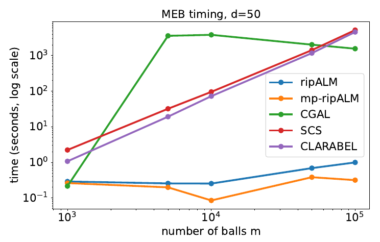
Runtime at d = 50 for 1,000–100,000 balls. ripALM and mp-ripALM run on GPU; CGAL, SCS, and CLARABEL run on CPU. -
Beyond expected information gain: stable Bayesian optimal experimental design with integral probability metrics and plug-and-play extensions
2026. arXiv.
Research highlight: Beyond expected information gain: stable Bayesian optimal experimental design with integral probability metrics and plug-and-play extensions
Keywords
Abstract
Bayesian Optimal Experimental Design (BOED) provides a rigorous framework for decision-making tasks in which data acquisition is often the critical bottleneck, especially in resource-constrained settings. Traditionally, BOED typically selects designs by maximizing expected information gain (EIG), commonly defined through the Kullback-Leibler (KL) divergence. However, classical evaluation of EIG often involves challenging nested expectations, and even advanced variational methods leave the underlying log-density-ratio objective unchanged. As a result, support mismatch, tail underestimation, and rare-event sensitivity remain intrinsic concerns for KL-based BOED. To address these fundamental bottlenecks, we introduce an IPM-based BOED framework that replaces density-based divergences with integral probability metrics (IPMs), including the Wasserstein distance, Maximum Mean Discrepancy, and Energy Distance, resulting in a highly flexible plug-and-play BOED framework. We establish theoretical guarantees showing that IPM-based utilities provide stronger geometry-aware stability under surrogate-model error and prior misspecification than classical EIG-based utilities. We also validate the proposed framework empirically, demonstrating that IPM-based designs yield highly concentrated credible sets. Furthermore, by extending the same sample-based BOED template in a plug-and-play manner to geometry-aware discrepancies beyond the IPM class, illustrated by a neural optimal transport estimator, we achieve accurate optimal designs in high-dimensional settings where conventional nested Monte Carlo estimators and advanced variational methods fail.
Integral probability metrics provide stable, geometry-aware alternatives to expected information gain for Bayesian experimental design.
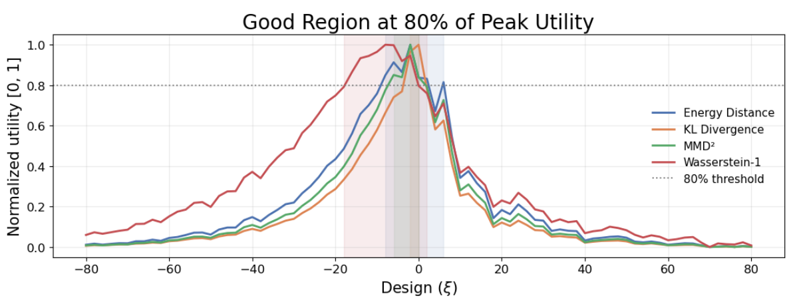
Preference-learning example: design regions above 80% of each utility’s own peak. -
Fast and effective computation of generalized symmetric matrix factorization
2026. arXiv.
Research highlight: Fast and effective computation of generalized symmetric matrix factorization
Keywords
Abstract
In this paper, we study a nonconvex, nonsmooth, and non-Lipschitz generalized symmetric matrix factorization model that unifies a broad class of matrix factorization formulations arising in machine learning, image science, engineering, and related areas. We first establish two exactness properties. On the modeling side, we prove an exact penalty property showing that, under suitable conditions, the symmetry-inducing quadratic penalty enforces symmetry whenever the penalty parameter is sufficiently large but finite, thereby exactly recovering the associated symmetric formulation. On the algorithmic side, we introduce an auxiliary-variable splitting formulation and establish an exact relaxation relationship that rigorously links stationary points of the original objective function to those of a relaxed potential function. Building on these exactness properties, we propose an average-type nonmonotone alternating updating method (A-NAUM) based on the relaxed potential function. At each iteration, A-NAUM alternately updates the two factor blocks by (approximately) minimizing the potential function, while the auxiliary block is updated in closed form. To ensure the convergence and enhance practical performance, we further incorporate an average-type nonmonotone line search and show that it is well-defined under mild conditions. Moreover, based on the Kurdyka-Lojasiewicz property and its associated exponent, we establish global convergence of the entire sequence to a stationary point and derive convergence rate results. Finally, numerical experiments on real datasets demonstrate the efficiency of A-NAUM.
Exactness results make generalized symmetric factorization amenable to the convergent A-NAUM alternating method.
Two exactness results Layer What becomes exact Model A finite quadratic penalty enforces symmetry. Relaxation Stationary points are linked through an auxiliary-variable formulation. Both statements require the conditions established in the paper. -
D-ripALM: A tuning-friendly decentralized relative-type inexact proximal augmented Lagrangian method
2026. arXiv.
Research highlight: D-ripALM: A tuning-friendly decentralized relative-type inexact proximal augmented Lagrangian method
Keywords
Abstract
This paper proposes D-ripALM, a Decentralized relative-type inexact proximal Augmented Lagrangian Method for consensus convex optimization over multi-agent networks. D-ripALM adopts a double-loop distributed optimization framework that accommodates a wide range of inner solvers, enabling efficient treatment of both smooth and nonsmooth objectives. In contrast to existing double-loop distributed augmented Lagrangian methods, D-ripALM employs a relative-type error criterion to regulate the switching between inner and outer iterations, resulting in a more practical and tuning-friendly algorithmic framework with enhanced numerical robustness. Moreover, we establish rigorous convergence guarantees for D-ripALM under general convexity assumptions, without requiring smoothness or strong convexity conditions commonly imposed in the distributed optimization literature. Numerical experiments further demonstrate the tuning-friendly nature of D-ripALM and its efficiency in attaining high-precision solutions with fewer communication rounds.
Relative-error control makes decentralized ALM easier to tune, with convergence analysis covering nonsmooth, generally convex objectives.
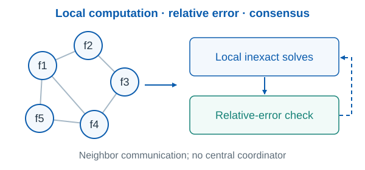
A simplified view of the inner/outer switching rule and neighbor communication. -
Convergence of a relative-type inexact proximal ALM for convex nonlinear programming
2025. arXiv.
Research highlight: Convergence of a relative-type inexact proximal ALM for convex nonlinear programming
Keywords
Abstract
This article investigates the convergence properties of a relative-type inexact preconditioned proximal augmented Lagrangian method (rip2ALM) for convex nonlinear programming, a fundamental class of optimization problems with broad applications in science and engineering. Inexact proximal augmented Lagrangian methods have proven to be highly effective for solving such problems, owing to their attractive theoretical properties and strong practical performance. However, the convergence behavior of the relative-type inexact preconditioned variant remains insufficiently understood. This work aims to reduce this gap by rigorously establishing the global convergence of the sequence generated by rip2ALM and proving its asymptotic (super)linear convergence rate under standard assumptions. In addition, we derive the global ergodic convergence rate with respect to both the primal feasibility violation and the primal objective residual, thereby offering a more comprehensive understanding of the overall performance of rip2ALM. These results deepen our theoretical understanding of the family of proximal augmented Lagrangian methods and motivate their development for practical, large-scale structured application problems.
A unified analysis explains the global behavior and asymptotic rates of relative-type inexact preconditioned proximal ALM.
Convergence at three levels Object Guarantee Iterates Global convergence Local behavior Asymptotic linear or superlinear rates Ergodic averages Objective-residual and feasibility bounds Each guarantee is subject to its stated assumptions; local rate results require additional conditions. -
PINS: Proximal iterations with sparse Newton and Sinkhorn for optimal transport
2025. arXiv.
Research highlight: PINS: Proximal iterations with sparse Newton and Sinkhorn for optimal transport
Topics
Abstract
Optimal transport (OT) is a widely used tool in machine learning, but computing high-accuracy solutions for large instances remains costly. Entropic regularization and the Sinkhorn algorithm improve scalability; however, when the regularization parameter is small, Sinkhorn convergence slows, and the iterates approach an entropic solution that remains separated from the true OT plan by an entropic-bias plateau. We introduce PINS (Proximal Iterations with sparse Newton and Sinkhorn), a two-loop solver designed to move beyond this plateau. The outer loop applies an entropic proximal-point method, solving the original OT problem through a sequence of entropic subproblems with shifted cost matrices. Each inner subproblem is then solved by a Sinkhorn warm-up followed by sparse-Newton refinement. We prove that PINS converges globally to an optimal solution of the unregularized OT problem and that the inner Hessian admits a sparsification at every outer iteration with a structure independent of the cost matrix. On synthetic and augmented-MNIST instances, PINS achieves much lower relative cost errors than Sinkhorn-type baselines, which stall at the entropic-bias plateau, and is 5–73× faster than Sinkhorn with the same outer loop at matched accuracy. On large-scale DOTmark instances, a streaming implementation reduces peak memory by 24–54% compared with the network-simplex linear programming (LP) solver and remains feasible under per-process memory budgets for which the LP solver fails.
Sparse Newton and Sinkhorn steps make entropic proximal iterations accurate and efficient, with large gains on the reported benchmarks.
Matched-accuracy wall time (seconds) Instance Sinkhorn + EPPA PINS Synthetic, n = 400 47.68 1.455 MNIST, N = 2 24.66 1.66 MNIST, N = 4 3,793.2 51.74 Same EPPA outer iteration count and matched final accuracy. Selected rows from the paper; N is its MNIST augmentation setting. -
ripALM: A relative-type inexact proximal augmented Lagrangian method with applications to quadratically regularized optimal transport
2024. arXiv.
Research highlight: ripALM: A relative-type inexact proximal augmented Lagrangian method with applications to quadratically regularized optimal transport
Keywords
Abstract
Inexact proximal augmented Lagrangian methods (ipALMs) have been widely used for solving linearly constrained convex optimization problems, owing to their strong theoretical guarantees and excellent numerical performance. In practice, however, existing ipALMs typically employ Rockafellar-type absolute error criteria for solving the subproblems, which require delicate problem-dependent tuning of error-tolerance sequences. In this paper, we propose ripALM, a relative-type ipALM whose subproblem error criterion has only a single tolerance parameter in [0, 1). This makes the method simpler to implement and less sensitive to parameter tuning in practice. On the other hand, the use of such a relative-type error criterion renders the convergence of our ripALM beyond the scope of the convergence theory of existing ipALMs. To address this gap, we develop a new analysis framework under which ripALM is shown to admit desirable global convergence properties and it achieves an asymptotic (super)linear convergence rate under a standard error bound condition. While there exist other relative-type inexact pALMs, to ensure convergence, they require additional correct steps that generally impede the convergence speed. To the best of our knowledge, ripALM is the first relative-type inexact version of the vanilla pALM that avoids both summable tolerance parameter sequences and correction steps, while retaining rigorous convergence guarantees. Numerical experiments on quadratically regularized optimal transport and basis pursuit denoising problems demonstrate the effectiveness and robustness of our proposed method.
One relative tolerance replaces delicate error-sequence tuning while retaining convergence guarantees for inexact proximal ALM.
Practical relative-error control Component ripALM Inner tolerance One relative parameter in [0, 1) Tolerance sequence No prescribed summable sequence Correction step Not required “One parameter” refers to the inner error criterion, not all algorithm settings. -
PNOD: An efficient projected Newton framework for exact optimal experimental designs
Research highlight: PNOD: An efficient projected Newton framework for exact optimal experimental designs
Keywords
Abstract
Computing the exact optimal experimental design has been a longstanding challenge in various scientific fields. This problem, when formulated using a specific information function, becomes a mixed-integer nonlinear programming (MINLP) problem, which is typically NP-hard, thus making the computation of a globally optimal solution extremely difficult. The branch and bound (BnB) method is a widely used approach for solving such MINLPs, but its practical efficiency heavily relies on the ability to solve continuous relaxations effectively within the BnB search tree. In this paper, we propose a novel projected Newton framework, combining with a vertex exchange method for efficiently solving the associated subproblems, designed to enhance the BnB method. This framework offers strong convergence guarantees by utilizing recent advances in solving self-concordant optimization and convex quadratic programming problems. Extensive numerical experiments on A-optimal and D-optimal design problems, two of the most commonly used models, demonstrate the framework’s promising numerical performance. Specifically, our framework significantly improves the efficiency of node evaluation within the BnB search tree and enhances the accuracy of solutions compared to state-of-the-art methods. The proposed framework is implemented in an open source Julia package called PNOD.jl, which opens up possibilities for its application in a wide range of real-world scenarios.
Efficient projected Newton node solves accelerate branch-and-bound for integer A- and D-optimal experimental designs.
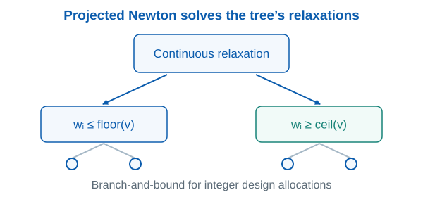
The schematic highlights the continuous relaxations that dominate node evaluation.


Papers
-
A provably convergent and practical algorithm for Gromov-Wasserstein optimal transport
NeurIPS 2026, accepted. arXiv, code.
Research highlight: A provably convergent and practical algorithm for Gromov-Wasserstein optimal transport
Topics
Abstract
Gromov–Wasserstein optimal transport (GWOT) aligns metric measure spaces by matching their within-domain relational structures, but large-scale GWOT remains challenging because its objective is nonconvex and projection onto the transport polytope is often solved only approximately in practice. This leads to a gap between practical projected-gradient implementations and convergence theory, which typically assumes exact projections. For squared-loss GWOT, we propose an inexact projected-gradient framework with a verifiable feasibility-residual-based inexact condition for the projection subproblem. This condition is directly computable and avoids unknown quantities such as the exact projection point. Under this implementable condition, we prove subsequential convergence to stationary points and, with a mild tolerance-decay condition, convergence of the whole sequence. The resulting method retains the simplicity and sparsity of projected-gradient schemes while providing rigorous convergence guarantees, turning projected-gradient methods into a principled and scalable approach for GWOT with provable reliability.
A practical inexact projected-gradient framework brings verifiable projection accuracy and convergence guarantees to Gromov–Wasserstein transport.
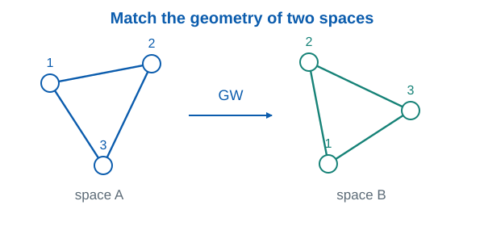
Toy spaces illustrate matching within-space geometry; the algorithm uses verifiable inexact projections. -
From equations to insights: Unraveling symbolic structures in PDEs with LLMs
SIAM Journal on Scientific Computing, accepted, 2026. SISC, arXiv.
Research highlight: From equations to insights: Unraveling symbolic structures in PDEs with LLMs
Keywords
Abstract
Motivated by the remarkable success of artificial intelligence (AI) across diverse fields, the application of AI to solve scientific problems, often formulated as partial differential equations (PDEs), has garnered increasing attention. While most existing research concentrates on theoretical properties (such as well-posedness, regularity, and continuity) of the solutions, alongside direct AI-driven methods for solving PDEs, the challenge of uncovering symbolic relationships within these equations remains largely unexplored. In this paper, we propose leveraging large language models (LLMs) to learn such symbolic relationships. Our results demonstrate that LLMs can effectively predict the operators involved in PDE solutions by utilizing the symbolic information in the PDEs both theoretically and numerically. Furthermore, we show that discovering these symbolic relationships can substantially improve both the efficiency and accuracy of symbolic machine learning for finding analytical approximation of PDE solutions, delivering a fully interpretable solution pipeline. This work opens new avenues for understanding the symbolic structure of scientific problems and advancing their solution processes.
LLMs predict operators in PDE solutions, narrowing symbolic search and improving interpretable analytical approximations.
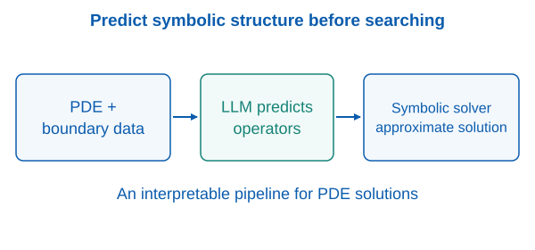
A simplified view of operator prediction guiding symbolic solution construction. -
OptimAI: Optimization from natural language using LLM-powered AI agents
Journal of Machine Learning, accepted, 2026. JML, arXiv.
Research highlight: OptimAI: Optimization from natural language using LLM-powered AI agents
Topics
Abstract
Optimization plays a vital role in scientific research and practical applications. However, formulating a concrete optimization problem described in natural language into a mathematical form and selecting a suitable solver to solve the problem requires substantial domain expertise. We introduce OptimAI, a framework for solving Optimization problems described in natural language by leveraging LLM-powered AI agents, and achieve superior performance over current state-of-the-art methods. Our framework is built upon the following key roles: (1) a formulator that translates natural language problem descriptions into mathematical formulations; (2) a planner that constructs a high-level solution strategy prior to execution; and (3) a coder and a code critic capable of interacting with the environment and reflecting to refine future actions. Ablation studies confirm that all roles are essential; removing the planner or code critic results in 5.8× and 3.1× drops in productivity, respectively. Furthermore, we introduce UCB-based debug scheduling to dynamically switch between alternative plans, yielding an additional 3.3× productivity gain. Our design emphasizes multi-agent collaboration, and our experiments confirm that combining diverse models leads to performance gains. Our approach attains 88.1% accuracy on the NLP4LP dataset and 82.3% on the Optibench dataset, reducing error rates by 58% and 52%, respectively, over prior best results.
Four cooperating LLM roles formulate, plan, implement, and debug optimization problems expressed in natural language.
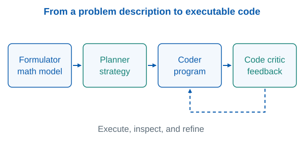
A simplified architecture: structured roles and iterative debugging turn descriptions into executable solutions. -
Accelerating multi-block constrained optimization by learning penalty parameters
Communications on Pure and Applied Analysis, accepted, 2026. CPAA, arXiv.
Research highlight: Accelerating multi-block constrained optimization by learning penalty parameters
Keywords
Abstract
Learning to Optimize (L2O) approaches, including algorithm unrolling, plug-and-play methods, and hyperparameter learning, have garnered significant attention and have been successfully applied to the Alternating Direction Method of Multipliers (ADMM) and its variants. However, the natural extension of L2O to multi-block ADMM-type methods remains largely unexplored. Such an extension is critical, as multi-block methods leverage the separable structure of optimization problems, offering substantial reductions in per-iteration complexity. Given that classical multi-block ADMM does not guarantee convergence, the Majorized Proximal Augmented Lagrangian Method (MPALM), which shares a similar form with multi-block ADMM and ensures convergence, is more suitable in this setting. Despite its theoretical advantages, MPALM’s performance is highly sensitive to the choice of penalty parameters. To address this limitation, we propose a novel L2O approach that adaptively selects this hyperparameter using supervised learning. We demonstrate the versatility and effectiveness of our method by applying it to the Lasso problem and the optimal transport problem. Our numerical results show that the proposed framework outperforms popular alternatives. Given its applicability to generic linearly constrained composite optimization problems, this work opens the door to a wide range of potential real-world applications.
Learned penalty parameters accelerate multi-block MPALM, reducing the need for manual tuning on Lasso and optimal transport problems.
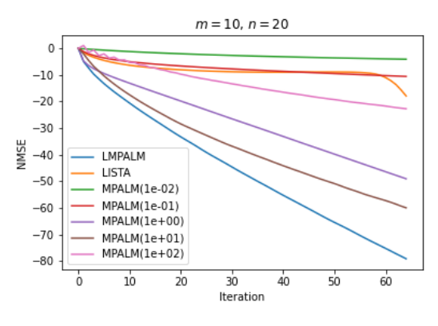
Lasso example, m = 10 and n = 20: log-normalized MSE versus iterations. LMPALM uses learned penalties. -
Fast and certifiable trajectory optimization Best Paper Award Finalist
in Algorithmic Foundations of Robotics XVI, Volume 1: Proceedings of the Sixteenth Workshop on the Algorithmic Foundations of Robotics, Springer Proceedings in Advanced Robotics, vol. 37, pp. 43-65, Springer, 2026. Springer, arXiv, code.
Research highlight: Fast and certifiable trajectory optimization
Topics
Abstract
We propose semidefinite trajectory optimization (STROM), a framework that computes fast and certifiably optimal solutions for nonconvex trajectory optimization problems defined by polynomial objectives and constraints. STROM employs sparse second-order Lasserre’s hierarchy to generate semidefinite program (SDP) relaxations of trajectory optimization. Different from existing tools (e.g., yalmip and sostools in Matlab), STROM generates chain-like multiple-block SDPs with only positive semidefinite (PSD) variables. Moreover, STROM does so two orders of magnitude faster. Underpinning STROM is cuADMM, the first ADMM-based SDP solver implemented in CUDA (with C/C++ extension) and runs in GPUs. cuADMM builds upon the symmetric Gauss-Seidel ADMM algorithm and leverages GPU parallelization to speedup solving sparse linear systems and projecting onto PSD cones. In five trajectory optimization problems (inverted pendulum, cart-pole, vehicle landing, flying robot, and car back-in), cuADMM computes optimal trajectories (with certified suboptimality below 1%) in minutes (when other solvers take hours or run out of memory) and seconds (when others take minutes). Further, when warmstarted by data-driven initialization in the inverted pendulum problem, cuADMM delivers real-time performance: providing certifiably optimal trajectories in 0.66 seconds despite the SDP has 49,500 variables and 47,351 constraints.
Sparse SDP relaxations and GPU computation produce practical robot trajectories with computable global-optimality certificates.
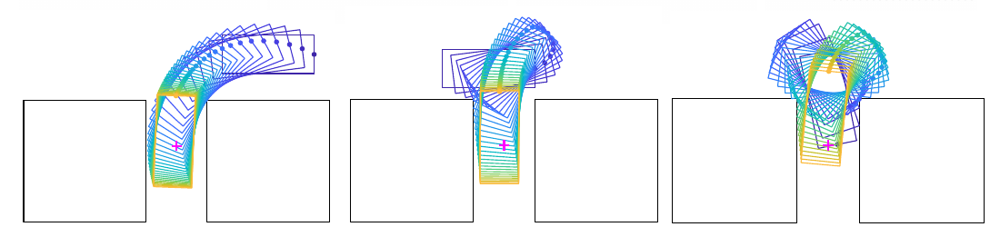
Car back-in trajectories. Across the paper’s five benchmarks, certified suboptimality is below 1%. -
NewVEM: A Newton vertex exchange method for a class of constrained self-concordant minimization problems
Journal of Scientific Computing 105, no. 64 (2025). JSC, arXiv.
Research highlight: NewVEM: A Newton vertex exchange method for a class of constrained self-concordant minimization problems
Keywords
Abstract
We propose NewVEM, a Newton vertex exchange method for efficiently solving self-concordant minimization problems under generalized simplex constraints. The algorithm features a two-level structure: the outer loop employs a projected Newton method, and the inner loop uses a vertex exchange approach to solve strongly convex quadratic subproblems. Both loops converge locally at linear rates under technical conditions, resulting in a “fast × fast” framework that demonstrates high efficiency and scalability in practice. To get a feasible initial point to execute the algorithm, we also present and analyze a highly efficient semismooth Newton method for computing the projection onto the generalized simplex. The excellent practical performance of the proposed algorithms is demonstrated by a set of numerical experiments. Our results further motivate the potential real-world applications of the considered model and the proposed algorithms.
Projected Newton outside and vertex exchange inside form a fast two-level method for self-concordant optimization over generalized simplices.
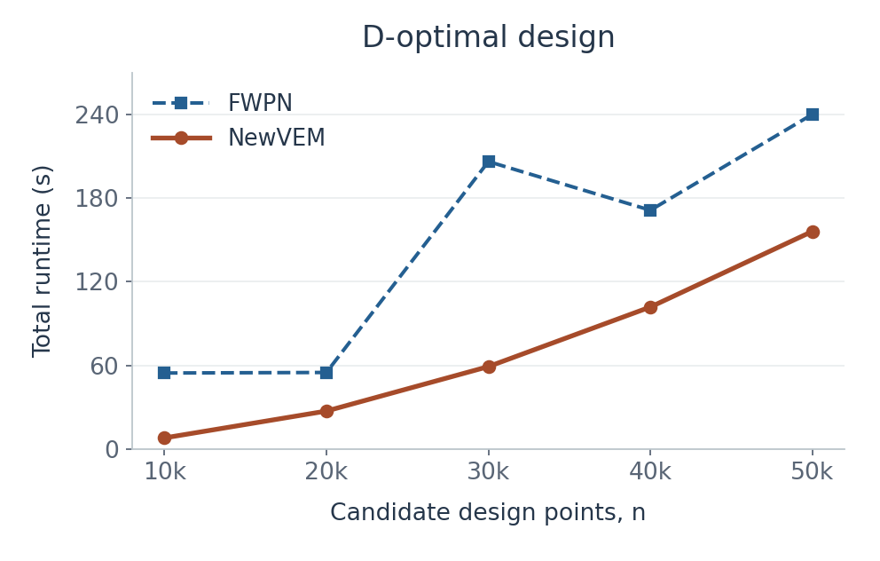
D-optimal design with a quadratic/trigonometric model (p = 4). Both methods use the stopping criterion λₖ ≤ 10⁻³. -
Nesterov's accelerated Jacobi-type methods for large-scale symmetric positive semidefinite linear systems
SIAM Journal on Scientific Computing 47, no. 6 (2025). SISC, arXiv, code.
Research highlight: Nesterov's accelerated Jacobi-type methods for large-scale symmetric positive semidefinite linear systems
Keywords
Abstract
Solving symmetric positive semidefinite linear systems is an essential task in many scientific computing problems. While Jacobi-type methods, including the classical Jacobi method and the weighted Jacobi method, exhibit simplicity in their forms and friendliness to parallelization, they are not attractive either because of the potential convergence failure or their slow convergence rate. This paper aims to showcase the possibility of improving classical Jacobi-type methods by employing Nesterov’s acceleration technique that results in an accelerated Jacobi-type method with improved convergence properties. Simultaneously, it preserves the appealing features for parallel implementation. In particular, we show that the proposed method has an O(t−2) convergence rate in terms of objective function values of the associated convex quadratic optimization problem, where t ≥ 1 denotes the iteration counter. To further improve the practical performance of the proposed method, we also develop and analyze a restarted variant of the method, which is shown to have an O((log2(t))2 t−2) convergence rate when the coefficient matrix is positive definite. Furthermore, we conduct appropriate numerical experiments to evaluate the efficiency of the proposed method. Our numerical results demonstrate that the proposed method outperforms the classical Jacobi-type methods and the conjugate gradient method, and shows a comparable performance as the preconditioned conjugate gradient method with a diagonal preconditioner. Finally, we develop a parallel implementation and conduct speed-up tests on some large-scale systems. Our results indicate that the proposed framework is highly scalable.
Nesterov acceleration improves Jacobi-type convergence while preserving the simple, parallel structure of the updates.
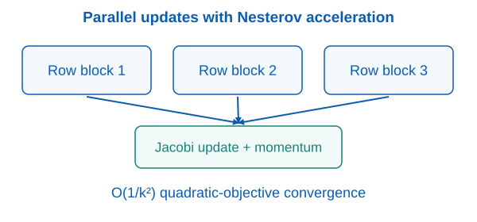
The rate is for the associated convex quadratic objective, under the method’s assumptions. -
An inexact Halpern iteration with application to distributionally robust optimization
Journal of Optimization Theory and Applications 260, no. 58 (2025): 1-41. JOTA, arXiv, code.
Research highlight: An inexact Halpern iteration with application to distributionally robust optimization
Keywords
Abstract
The Halpern iteration for solving monotone inclusion problems has gained increasing interests in recent years due to its simple form and appealing convergence properties. In this paper, we investigate the inexact variants of the scheme in both deterministic and stochastic settings. We conduct extensive convergence analysis and show that by choosing the inexactness tolerances appropriately, the inexact schemes admit an O(k−1) convergence rate in terms of the (expected) residue norm. Our results relax the state-of-the-art inexactness conditions employed in the literature while sharing the same competitive convergence properties. We then demonstrate how the proposed methods can be applied for solving two classes of data-driven Wasserstein distributionally robust optimization problems that admit convex-concave min-max optimization reformulations. We highlight its capability of performing inexact computations for distributionally robust learning with stochastic first-order methods and for general nonlinear convex-concave loss functions, which are competitive in the literature.
Inexact Halpern updates retain O(1/k) residual rates—expected residuals in the stochastic setting—and enable practical Wasserstein DRO.
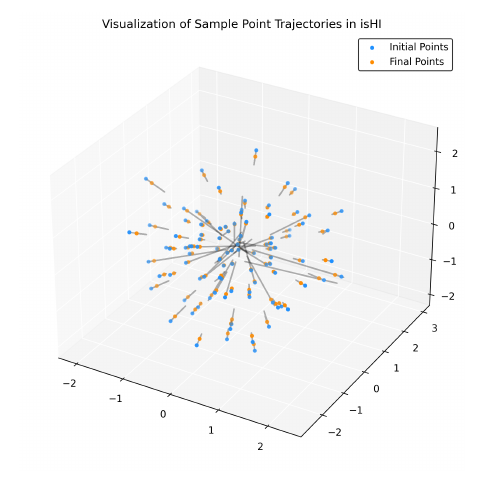
Empirical samples (blue) move toward worst-case perturbations (orange) in the nonlinear DRO example. -
A squared smoothing Newton method for semidefinite programming
Mathematics of Operations Research 50, no. 4 (2025): 2433-3282. MOOR, arXiv.
Research highlight: A squared smoothing Newton method for semidefinite programming
Keywords
Abstract
This paper proposes a squared smoothing Newton method via the Huber smoothing function for solving semidefinite programming problems (SDPs). We first study the fundamental properties of the matrix-valued mapping defined upon the Huber function. Using these results and existing ones in the literature, we then conduct rigorous convergence analysis and establish convergence properties for the proposed algorithm. In particular, we show that the proposed method is well-defined and admits global convergence. Moreover, under suitable regularity conditions, i.e., the primal and dual constraint nondegenerate conditions, the proposed method is shown to have a superlinear convergence rate. To evaluate the practical performance of the algorithm, we conduct extensive numerical experiments for solving various classes of SDPs. Comparison with the state-of-the-art SDP solvers demonstrates that our method is also efficient for computing accurate solutions of SDPs.
Huber smoothing preserves zero eigenvalue contributions, allowing a squared smoothing Newton method to exploit structure in SDP.
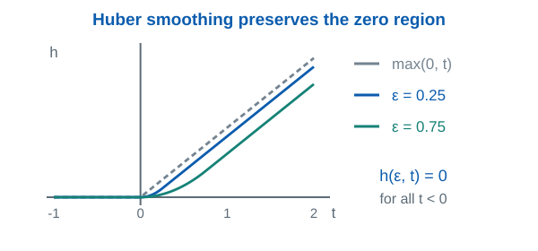
Scalar Huber smoothing preserves the zero region and smooths the PSD projection when applied to eigenvalues. -
On the stochastic (variance-reduced) proximal gradient method for regularized expected reward optimization
Transactions on Machine Learning Research, 2024. TMLR, arXiv.
Research highlight: On the stochastic (variance-reduced) proximal gradient method for regularized expected reward optimization
Topics
Abstract
We consider a regularized expected reward optimization problem in the non-oblivious setting that covers many existing problems in reinforcement learning (RL). In order to solve such an optimization problem, we apply and analyze the classical stochastic proximal gradient method. In particular, the method has shown to admit an O(ε−4) sample complexity to an ε-stationary point, under standard conditions. Since the variance of the classical stochastic gradient estimator is typically large, which slows down the convergence, we also apply an efficient stochastic variance-reduce proximal gradient method with an importance sampling based ProbAbilistic Gradient Estimator (PAGE). Our analysis shows that the sample complexity can be improved from O(ε−4) to O(ε−3) under additional conditions. Our results on the stochastic (variance-reduced) proximal gradient method match the sample complexity of their most competitive counterparts for discounted Markov decision processes under similar settings. To the best of our knowledge, the proposed methods represent a novel approach in addressing the general regularized reward optimization problem.
Importance-sampling-based variance reduction improves sample complexity for general regularized expected-reward optimization.
Samples to reach ε-stationarity Method Sample complexity Stochastic proximal gradient O(ε⁻⁴) Variance-reduced proximal gradient with PAGE O(ε⁻³) Bounds hold under the respective assumptions; the improved rate uses additional conditions. -
A sparse smoothing Newton method for solving discrete optimal transport problems
ACM Transactions on Mathematical Software 50, no. 3 (2024): 1-26. TOMS, arXiv.
Research highlight: A sparse smoothing Newton method for solving discrete optimal transport problems
Keywords
Abstract
The discrete optimal transport (OT) problem, which offers an effective computational tool for comparing two discrete probability distributions, has recently attracted much attention and played essential roles in many modern applications. This paper proposes to solve the discrete OT problem by applying a squared smoothing Newton method via the Huber smoothing function for solving the corresponding KKT system directly. The proposed algorithm admits appealing convergence properties and is able to take advantage of the solution sparsity to greatly reduce computational costs. Moreover, the algorithm can be extended to solve problems with similar structures, including the Wasserstein barycenter (WB) problem with fixed supports. To verify the practical performance of the proposed method, we conduct extensive numerical experiments to solve a large set of discrete OT and WB benchmark problems. Our numerical results show that the proposed method is efficient compared to state-of-the-art linear programming (LP) solvers. Moreover, the proposed method consumes less memory than existing LP solvers, which demonstrates the potential usage of our algorithm for solving large-scale OT and WB problems.
A Huber-based Newton method exploits sparse transport solutions to reduce computation and memory for OT and fixed-support Wasserstein barycenters.
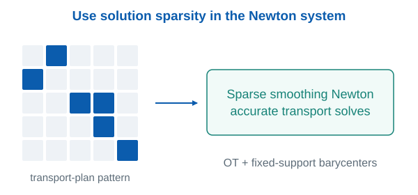
The matrix shows an illustrative sparsity pattern, not a measured transport plan. -
A corrected inexact proximal augmented Lagrangian method with a relative error criterion for a class of group-quadratic regularized optimal transport problems
Journal of Scientific Computing 99, no. 79 (2024). JSC, arXiv.
Research highlight: A corrected inexact proximal augmented Lagrangian method with a relative error criterion for a class of group-quadratic regularized optimal transport problems
Keywords
Abstract
The optimal transport (OT) problem and its related problems have attracted significant attention and have been extensively studied in various applications. In this paper, we focus on a class of group-quadratic regularized OT problems which aim to find solutions with specialized structures that are advantageous in practical scenarios. To solve this class of problems, we propose a corrected inexact proximal augmented Lagrangian method (ciPALM), with the subproblems being solved by the semi-smooth Newton (Ssn) method. We establish that the proposed method exhibits appealing convergence properties under mild conditions. Moreover, our ciPALM distinguishes itself from the recently developed semismooth Newton-based inexact proximal augmented Lagrangian (Snipal) method for linear programming. Specifically, Snipal uses an absolute error criterion for the approximate minimization of the subproblem for which a summable sequence of tolerance parameters needs to be pre-specified for practical implementations. In contrast, our ciPALM adopts a relative error criterion with a single tolerance parameter, which would be more friendly to tune from computational and implementation perspectives. These favorable properties position our ciPALM as a promising candidate for tackling large-scale problems. Various numerical studies validate the effectiveness of employing a relative error criterion for the inexact proximal augmented Lagrangian method, and also demonstrate that our ciPALM is competitive for solving large-scale group-quadratic regularized OT problems.
A single relative tolerance makes corrected proximal ALM with semismooth Newton subsolves practical for group-quadratic regularized transport.
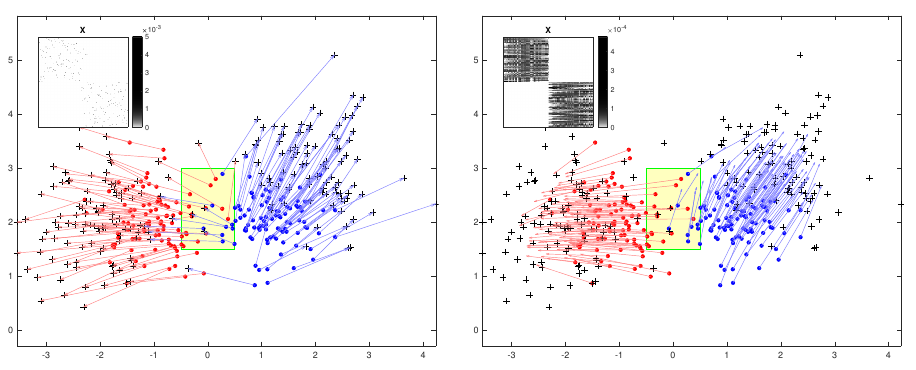
Left: λ₁ = λ₂ = 0. Right: λ₁ = λ₂ = 1. Regularization changes the structure of the transport plan. -
Accelerating nuclear-norm regularized low-rank matrix optimization through Burer-Monteiro decomposition
Journal of Machine Learning Research 25, no. 379 (2024): 1-52. JMLR, arXiv, code.
Research highlight: Accelerating nuclear-norm regularized low-rank matrix optimization through Burer-Monteiro decomposition
Keywords
Abstract
This work proposes a rapid algorithm, BM-Global, for nuclear-norm-regularized convex and low-rank matrix optimization problems. BM-Global efficiently decreases the objective value via low-cost steps leveraging the nonconvex but smooth Burer-Monteiro (BM) decomposition, while effectively escapes saddle points and spurious local minima ubiquitous in the BM form to obtain guarantees of fast convergence rates to the global optima of the original nuclear-norm-regularized problem through aperiodic inexact proximal gradient steps on it. The proposed approach adaptively adjusts the rank for the BM decomposition and can provably identify an optimal rank for the BM decomposition problem automatically in the course of optimization through tools of manifold identification. BM-Global hence also spends significantly less time on parameter tuning than existing matrix-factorization methods, which require an exhaustive search for finding this optimal rank. Extensive experiments on real-world large-scale problems of recommendation systems, regularized kernel estimation, and molecular conformation confirm that BM-Global can indeed effectively escapes spurious local minima at which existing BM approaches are stuck, and is a magnitude faster than state-of-the-art algorithms for low-rank matrix optimization problems involving a nuclear-norm regularizer. Based on this research, we have released an open-source package of the proposed BM-Global at https://www.github.com/leepei/BM-Global/.
Cheap factorized steps gain the safeguards of convex optimization, while the algorithm adjusts the factorization rank automatically.
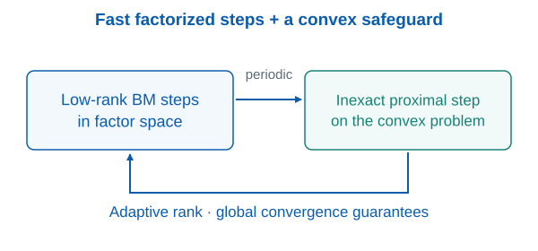
The schematic separates the fast factorized phase from the global-convergence safeguard. -
An inexact projected gradient method with rounding and lifting by nonlinear programming for solving rank-one semidefinite relaxation of polynomial optimization
Mathematical Programming 201, no. 1-2 (2023): 409-472. MP, arXiv, code.
Research highlight: An inexact projected gradient method with rounding and lifting by nonlinear programming for solving rank-one semidefinite relaxation of polynomial optimization
Keywords
Abstract
We consider solving high-order and tight semidefinite programming (SDP) relaxations of nonconvex polynomial optimization problems (POPs) that often admit degenerate rank-one optimal solutions. Instead of solving the SDP alone, we propose a new algorithmic framework that blends local search using the nonconvex POP into global descent using the convex SDP. In particular, we first design a globally convergent inexact projected gradient method (iPGM) for solving the SDP that serves as the backbone of our framework. We then accelerate iPGM by taking long, but safeguarded, rank-one steps generated by fast nonlinear programming algorithms. We prove that the new framework is still globally convergent for solving the SDP. To solve the iPGM subproblem of projecting a given point onto the feasible set of the SDP, we design a two-phase algorithm with phase one using a symmetric Gauss–Seidel based accelerated proximal gradient method (sGS-APG) to generate a good initial point, and phase two using a modified limited-memory BFGS (L-BFGS) method to obtain an accurate solution. We analyze the convergence for both phases and establish a novel global convergence result for the modified L-BFGS that does not require the objective function to be twice continuously differentiable. We conduct numerical experiments for solving second-order SDP relaxations arising from a diverse set of POPs. Our framework demonstrates state-of-the-art efficiency, scalability, and robustness in solving degenerate SDPs to high accuracy, even in the presence of millions of equality constraints.
Safeguarded low-rank local search accelerates a globally convergent SDP method, combining fast nonconvex steps with convex guarantees.
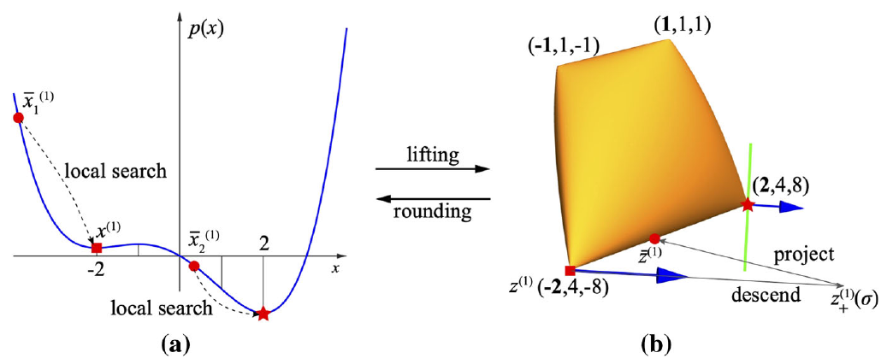
The paper’s univariate example explains how rounding, local search, lifting, and SDP descent work together. -
An efficient implementable inexact entropic proximal point algorithm for a class of linear programming problems
Computational Optimization and Applications 85, no. 1 (2023): 107-146. COAP, arXiv, code.
Research highlight: An efficient implementable inexact entropic proximal point algorithm for a class of linear programming problems
Keywords
Abstract
We introduce a class of specially structured linear programming (LP) problems, which has favorable modeling capability for important application problems in different areas such as optimal transport, discrete tomography and economics. To solve these generally large-scale LP problems efficiently, we design an implementable inexact entropic proximal point algorithm (iEPPA) combined with an easy-to-implement dual block coordinate descent method as a subsolver. Unlike existing entropy-type proximal point algorithms, our iEPPA employs a more practically checkable stopping condition for solving the associated subproblems while achieving provable convergence. Moreover, when solving the capacity constrained multi-marginal optimal transport (CMOT) problem (a special case of our LP problem), our iEPPA is able to bypass the underlying numerical instability issues that often appear in the popular entropic regularization approach, since our algorithm does not require the proximal parameter to be very small in order to obtain an accurate approximate solution. Numerous numerical experiments show that our iEPPA is efficient and robust for solving large-scale CMOT problems. The experiments on the discrete tomography problem also highlight the potential modeling power of our model.
Checkable inexact stopping rules make entropic proximal iterations practical for structured LPs, including capacity-constrained multi-marginal transport.
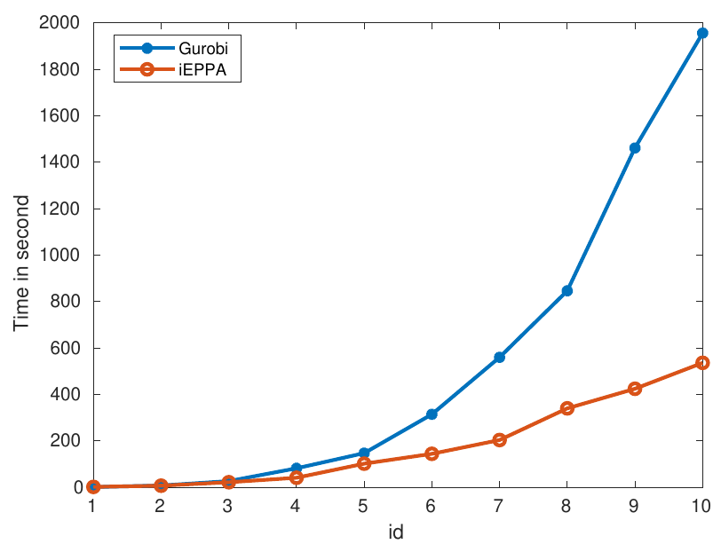
Three-marginal capacity-constrained transport, n = 50 × id. -
QPPAL: A two-phase proximal augmented Lagrangian method for high dimensional convex quadratic programming problems
ACM Transactions on Mathematical Software 48, no. 3 (2022): 1-27. TOMS, arXiv, code.
Research highlight: QPPAL: A two-phase proximal augmented Lagrangian method for high dimensional convex quadratic programming problems
Keywords
Abstract
In this article, we aim to solve high-dimensional convex quadratic programming (QP) problems with a large number of quadratic terms, linear equality, and inequality constraints. To solve the targeted QP problem to a desired accuracy efficiently, we consider the restricted-Wolfe dual problem and develop a two-phase Proximal Augmented Lagrangian method (QPPAL), with Phase I to generate a reasonably good initial point to warm start Phase II to obtain an accurate solution efficiently. More specifically, in Phase I, based on the recently developed symmetric Gauss-Seidel (sGS) decomposition technique, we design a novel sGS-based semi-proximal augmented Lagrangian method for the purpose of finding a solution of low to medium accuracy. Then, in Phase II, a proximal augmented Lagrangian algorithm is proposed to obtain a more accurate solution efficiently. Extensive numerical results evaluating the performance of QPPAL against existing state-of-the-art solvers Gurobi, OSQP, and QPALM are presented to demonstrate the high efficiency and robustness of our proposed algorithm for solving various classes of large-scale convex QP problems. The MATLAB implementation of the software package QPPAL is available at https://blog.nus.edu.sg/mattohkc/softwares/qppal/.
A two-phase solver pairs inexpensive warm-start iterations with accurate proximal ALM refinement for high-dimensional convex QP.
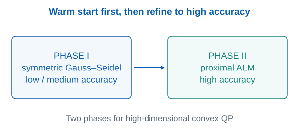
Phase I targets low-to-medium accuracy; Phase II efficiently refines the warm start. -
On degenerate doubly nonnegative projection problems
Mathematics of Operations Research 47, no. 3 (2022): 2219-2239. MOOR, arXiv.
Research highlight: On degenerate doubly nonnegative projection problems
Keywords
Abstract
The doubly nonnegative (DNN) cone, being the set of all positive semidefinite matrices whose elements are nonnegative, is a popular approximation of the computationally intractable completely positive cone. The major difficulty for implementing a Newton-type method to compute the projection of a given large scale matrix onto the DNN cone lies in the possible failure of the constraint nondegeneracy, a generalization of the linear independence constraint qualification for nonlinear programming. Such a failure results in the singularity of the Jacobian of the nonsmooth equation representing the Karush-Kuhn-Tucker optimality condition that prevents the semismooth Newton-CG method from solving it with a desirable convergence rate. In this paper, we overcome the aforementioned difficulty by solving a sequence of better conditioned nonsmooth equations generated by the augmented Lagrangian method (ALM) instead of solving one above mentioned singular equation. By leveraging on the metric subregularity of the normal cone associated with the positive semidefinite cone, we derive sufficient conditions to ensure the dual quadratic growth condition of the underlying problem, which further leads to the asymptotically superlinear convergence of the proposed ALM. Numerical results on difficult randomly generated instances and from the semidefinite programming library are presented to demonstrate the efficiency of the algorithm for computing the DNN projection to a very high accuracy.
Augmented Lagrangian subproblems overcome the singular Newton systems that make degenerate doubly nonnegative projection difficult.
Handling degenerate DNN projection Approach Newton equations Direct KKT solve The Jacobian can be singular under degeneracy. Augmented Lagrangian A sequence of better-conditioned nonsmooth equations. The DNN cone combines positive semidefiniteness with entrywise nonnegativity. -
A new homotopy proximal variable-metric framework for composite convex minimization
Mathematics of Operations Research 47, no. 1 (2022): 508-539. MOOR, arXiv.
Research highlight: A new homotopy proximal variable-metric framework for composite convex minimization
Keywords
Abstract
This paper suggests two novel ideas to develop new proximal variable-metric methods for solving a class of composite convex optimization problems. The first idea is a new parameterization of the optimality condition which allows us to develop a class of homotopy proximal variable-metric methods. We show that under appropriate assumptions such as strong convexity-type and smoothness, or self-concordance, our new schemes can achieve finite global iteration-complexity bounds. Our second idea is a primal-dual-primal framework for proximal-Newton methods which can lead to some useful computational features for a subclass of nonsmooth composite convex optimization problems. Starting from the primal problem, we formulate its dual problem, and use our homotopy proximal Newton method to solve this dual problem. Instead of solving the subproblem directly in the dual space, we suggest to dualize this subproblem to go back to the primal space. The resulting subproblem shares some similarity promoted by the regularizer of the original problem and leads to some computational advantages. As a byproduct, we specialize the proposed algorithm to solve covariance estimation problems. Surprisingly, our new algorithm does not require any matrix inversion or Cholesky factorization, and function evaluation, while it works in the primal space with sparsity structures that are promoted by the regularizer. Numerical examples on several applications are given to illustrate our theoretical development and to compare with state-of-the-arts.
A homotopy parameterization and primal-dual-primal construction preserve useful regularizer structure in proximal Newton subproblems.
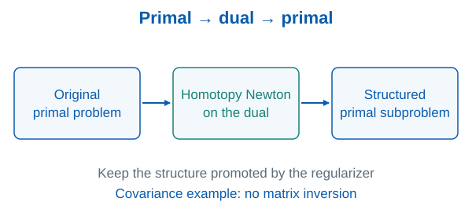
In the covariance-estimation specialization, the method avoids matrix inversion and Cholesky factorization. -
An inexact augmented Lagrangian method for second-order cone programming with applications
SIAM Journal on Optimization 31, no. 3 (2021): 1748-1773. SIOPT, arXiv.
Research highlight: An inexact augmented Lagrangian method for second-order cone programming with applications
Keywords
Abstract
In this paper, we adopt the augmented Lagrangian method (ALM) to solve convex quadratic second-order cone programming problems (SOCPs). Fruitful results on the efficiency of the ALM have been established in the literature. Recently, it has been shown in [Cui, Sun, and Toh, Math. Program., 178 (2019), pp. 381--415] that if the quadratic growth condition holds at an optimal solution for the dual problem, then the KKT residual converges to zero R-superlinearly when the ALM is applied to the primal problem. Moreover, Cui, Ding, and Zhao [SIAM J. Optim., 27 (2017), pp. 2332--2355] provided sufficient conditions for the quadratic growth condition to hold under the metric subregularity and bounded linear regularity conditions for solving composite matrix optimization problems involving spectral functions. Here, we adopt these recent ideas to analyze the convergence properties of the ALM when applied to SOCPs. To the best of our knowledge, no similar work has been done for SOCPs so far. In our paper, we first provide sufficient conditions to ensure the quadratic growth condition for SOCPs. With these elegant theoretical guarantees, we then design an SOCP solver and apply it to solve various classes of SOCPs, such as minimal enclosing ball problems, classical trust-region subproblems, square-root Lasso problems, and DIMACS Challenge problems. Numerical results show that the proposed ALM based solver is efficient and robust compared to the existing highly developed solvers, such as Mosek and SDPT3.
Quadratic-growth conditions connect SOCP geometry to fast ALM residual convergence and an effective solver for structured cone problems.
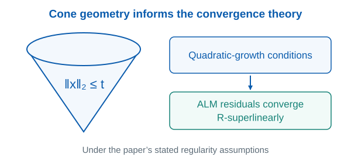
The convergence implication holds under the regularity conditions established in the paper.